load("mnist.mat"); %Iterate through each digit for d=0:9 digits = digits_train(:, :, labels_train==d); %get images corresponding to the image digits = reshape(im2double(digits), [784 size(digits, 3)]); % reshape the images into a vector of size 784. % Every column corresponds to one image % each row has the pixel intensity for one particular location mean_vector = sum(digits, 2)/size(digits, 2); %calculate mean = sum/number for each of the 784 component digits = digits - mean_vector; % subtract mean from data. done to center the image on the mean. % Since we have mean, we can retrieve original image by just adding the mean cov = digits*digits'/size(digits, 2); % calculate the co-variance matrix for the data % the MLE estimate is used for the covariance matrix [V, D] = eig(cov); % Eigen value decomposition for the co variance matrix % it returns the eigenvalues in the diagonal matrix D and corresponding % unit eigen vectors in V [~, i] = sort(diag(D), 'descend'); % get the index permutation correspoding to decreasing sort of eigen values % this is done so that we can sort the eigenvectors acc. to eigenvalues V = V(:, i); %sort the eigen vectors D = D(i, i); %sort the eigen values v1 = V(:, 1); %eigen vector with maximum eigen vector lambda1 = D(1, 1); %maximum eigen value. Note D is diagonal matrix figure; plot(diag(D)); %plot the eigen values title(["Eigenvalues for Digit " num2str(d)]); %show the three images mu, mu-sqrt(l)v, mu + sqrt(l)v figure; subplot(1,3,1); imagesc(reshape(mean_vector - sqrt(lambda1)*v1,[28 28])); title("\mu - sqrt(\lambda_1)*v_1 for " + string(d)) subplot(1,3,2); imagesc(reshape(mean_vector,[28 28])); title("\mu for " + string(d)) subplot(1,3,3); imagesc(reshape(mean_vector + sqrt(lambda1)*v1,[28 28])); title("\mu + sqrt(\lambda_1)*v_1 for " + string(d)) end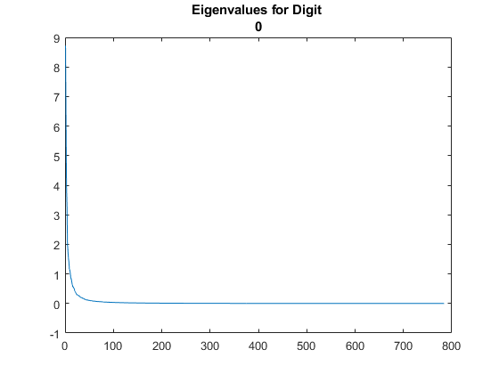 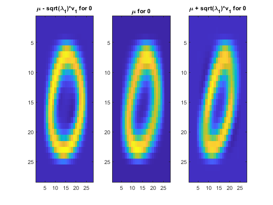 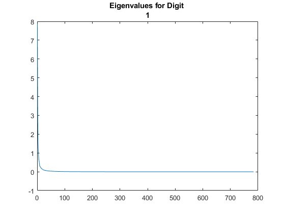 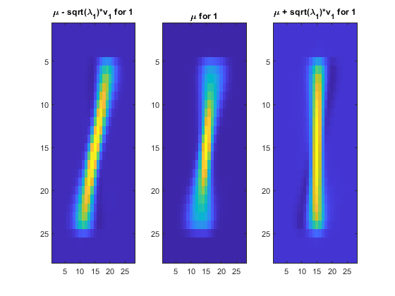 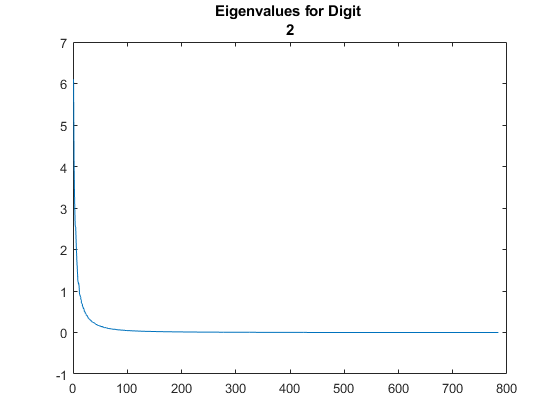 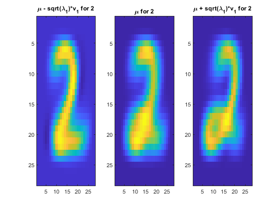 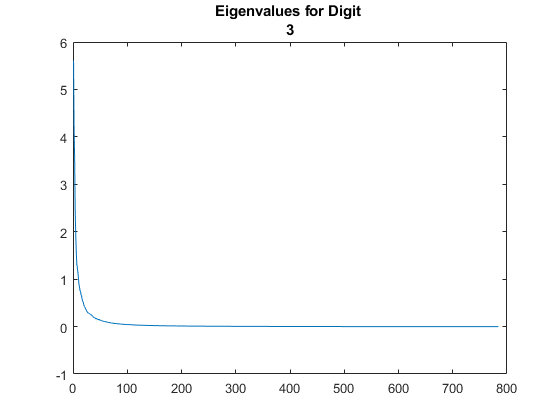 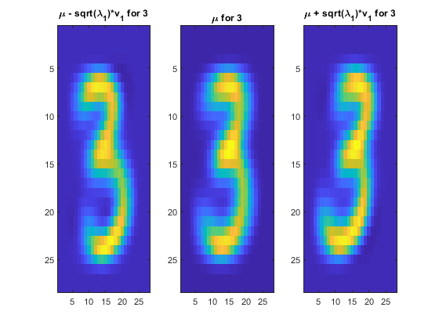 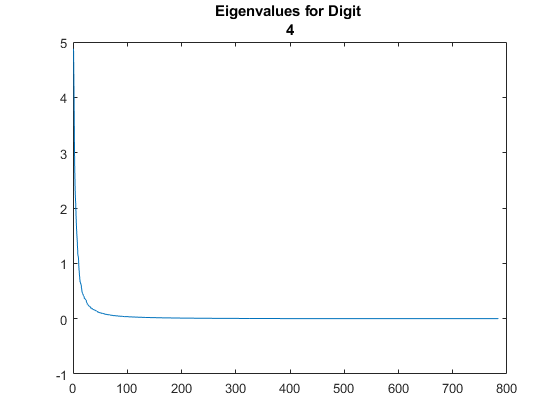 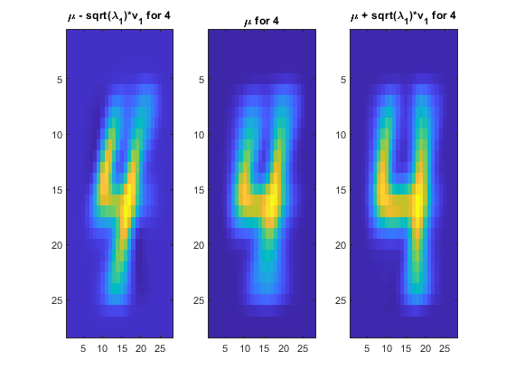 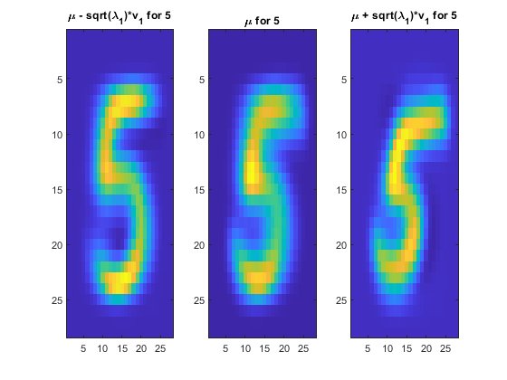 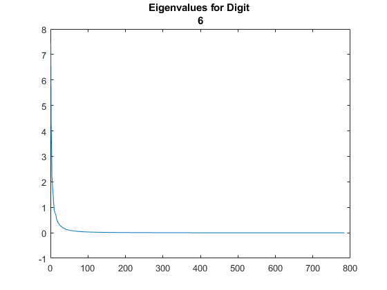 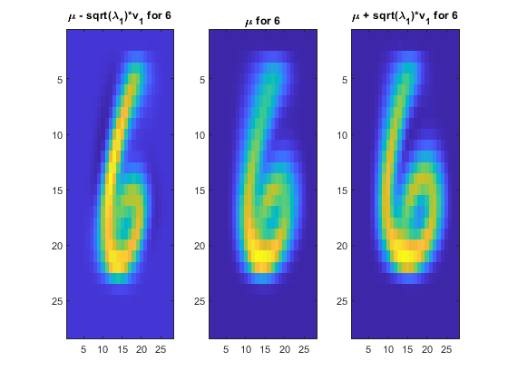 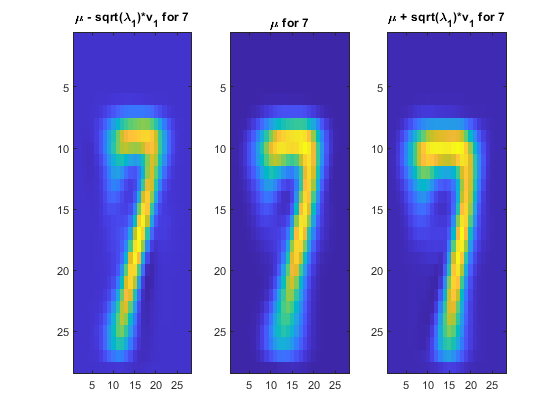
 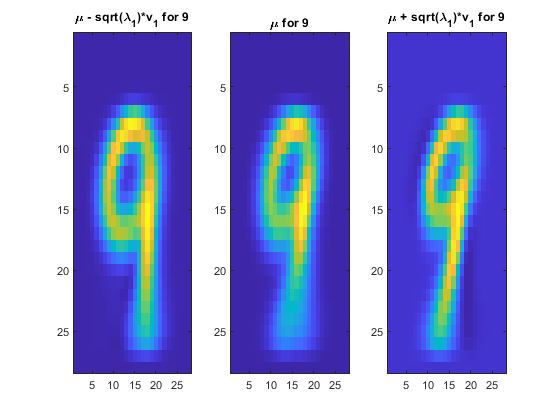
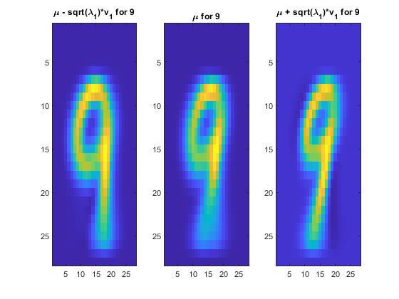